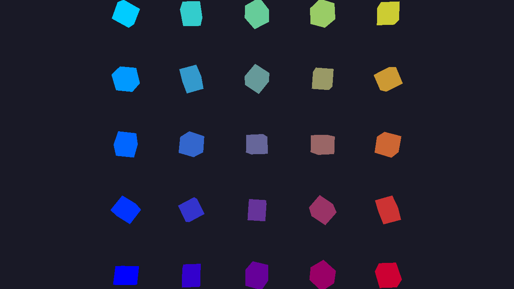

Indirect Drawing
In this tutorial, you'll learn how to use indirect drawing with Zenith.NET. Indirect drawing allows the GPU to control draw parameters, enabling GPU-driven rendering techniques.
Overview
We'll create an IndirectDrawingRenderer class that:
- Creates multiple instances of geometry with different transforms
- Stores draw arguments in a GPU buffer
- Uses
DrawIndexedIndirectto render all instances in a single call - Demonstrates GPU-driven rendering patterns
The Renderer Class
Create a new file Renderers/IndirectDrawingRenderer.cs:
namespace ZenithTutorials.Renderers;
internal unsafe class IndirectDrawingRenderer : IRenderer
{
private const int InstanceCount = 25; // 5x5 grid of cubes
private const string ShaderSource = """
struct ViewConstants
{
float4x4 View;
float4x4 Projection;
};
struct InstanceData
{
float4x4 Model;
float4 Color;
};
struct VSInput
{
float3 Position : POSITION0;
float4 Color : COLOR0;
uint InstanceID : SV_InstanceID;
};
struct PSInput
{
float4 Position : SV_POSITION;
float4 Color : COLOR0;
};
ConstantBuffer<ViewConstants> view;
StructuredBuffer<InstanceData> instances;
PSInput VSMain(VSInput input)
{
InstanceData instance = instances[input.InstanceID];
float4 worldPos = mul(float4(input.Position, 1.0), instance.Model);
float4 viewPos = mul(worldPos, view.View);
PSInput output;
output.Position = mul(viewPos, view.Projection);
output.Color = input.Color * instance.Color;
return output;
}
float4 PSMain(PSInput input) : SV_TARGET
{
return input.Color;
}
""";
private readonly Buffer vertexBuffer;
private readonly Buffer indexBuffer;
private readonly Buffer indirectBuffer;
private readonly Buffer viewConstantsBuffer;
private readonly Buffer instanceBuffer;
private readonly ResourceLayout resourceLayout;
private readonly ResourceTable resourceTable;
private readonly GraphicsPipeline pipeline;
private float rotationAngle;
public IndirectDrawingRenderer()
{
Vertex[] vertices =
[
// Front face
new(new(-0.5f, -0.5f, 0.5f), new(1.0f, 1.0f, 1.0f, 1.0f)),
new(new( 0.5f, -0.5f, 0.5f), new(1.0f, 1.0f, 1.0f, 1.0f)),
new(new( 0.5f, 0.5f, 0.5f), new(1.0f, 1.0f, 1.0f, 1.0f)),
new(new(-0.5f, 0.5f, 0.5f), new(1.0f, 1.0f, 1.0f, 1.0f)),
// Back face
new(new(-0.5f, -0.5f, -0.5f), new(1.0f, 1.0f, 1.0f, 1.0f)),
new(new( 0.5f, -0.5f, -0.5f), new(1.0f, 1.0f, 1.0f, 1.0f)),
new(new( 0.5f, 0.5f, -0.5f), new(1.0f, 1.0f, 1.0f, 1.0f)),
new(new(-0.5f, 0.5f, -0.5f), new(1.0f, 1.0f, 1.0f, 1.0f))
];
uint[] indices =
[
0, 1, 2, 0, 2, 3,
5, 4, 7, 5, 7, 6,
4, 0, 3, 4, 3, 7,
1, 5, 6, 1, 6, 2,
3, 2, 6, 3, 6, 7,
4, 5, 1, 4, 1, 0
];
vertexBuffer = App.Context.CreateBuffer(new()
{
SizeInBytes = (uint)(sizeof(Vertex) * vertices.Length),
StrideInBytes = (uint)sizeof(Vertex),
Flags = BufferUsageFlags.Vertex | BufferUsageFlags.MapWrite
});
vertexBuffer.Upload(vertices, 0);
indexBuffer = App.Context.CreateBuffer(new()
{
SizeInBytes = (uint)(sizeof(uint) * indices.Length),
StrideInBytes = sizeof(uint),
Flags = BufferUsageFlags.Index | BufferUsageFlags.MapWrite
});
indexBuffer.Upload(indices, 0);
indirectBuffer = App.Context.CreateBuffer(new()
{
SizeInBytes = (uint)sizeof(IndirectDrawIndexedArgs),
StrideInBytes = (uint)sizeof(IndirectDrawIndexedArgs),
Flags = BufferUsageFlags.Indirect | BufferUsageFlags.MapWrite
});
indirectBuffer.Upload([new IndirectDrawIndexedArgs()
{
IndexCount = (uint)indices.Length,
InstanceCount = InstanceCount,
FirstIndex = 0,
VertexOffset = 0,
FirstInstance = 0
}], 0);
viewConstantsBuffer = App.Context.CreateBuffer(new()
{
SizeInBytes = (uint)sizeof(ViewConstants),
StrideInBytes = (uint)sizeof(ViewConstants),
Flags = BufferUsageFlags.Constant | BufferUsageFlags.MapWrite
});
instanceBuffer = App.Context.CreateBuffer(new()
{
SizeInBytes = (uint)(sizeof(InstanceData) * InstanceCount),
StrideInBytes = (uint)sizeof(InstanceData),
Flags = BufferUsageFlags.ShaderResource | BufferUsageFlags.MapWrite
});
resourceLayout = App.Context.CreateResourceLayout(new()
{
Bindings = BindingHelper.Bindings
(
new() { Type = ResourceType.ConstantBuffer, Count = 1, StageFlags = ShaderStageFlags.Vertex },
new() { Type = ResourceType.StructuredBuffer, Count = 1, StageFlags = ShaderStageFlags.Vertex }
)
});
resourceTable = App.Context.CreateResourceTable(new()
{
Layout = resourceLayout,
Resources = [viewConstantsBuffer, instanceBuffer]
});
InputLayout inputLayout = new();
inputLayout.Add(new() { Format = ElementFormat.Float3, Semantic = ElementSemantic.Position });
inputLayout.Add(new() { Format = ElementFormat.Float4, Semantic = ElementSemantic.Color });
using Shader vertexShader = App.Context.LoadShaderFromSource(ShaderSource, "VSMain", ShaderStageFlags.Vertex);
using Shader pixelShader = App.Context.LoadShaderFromSource(ShaderSource, "PSMain", ShaderStageFlags.Pixel);
// Create graphics pipeline
pipeline = App.Context.CreateGraphicsPipeline(new()
{
RenderStates = new()
{
RasterizerState = RasterizerStates.CullBack,
DepthStencilState = DepthStencilStates.Default,
BlendState = BlendStates.Opaque
},
Vertex = vertexShader,
Pixel = pixelShader,
ResourceLayout = resourceLayout,
InputLayouts = [inputLayout],
PrimitiveTopology = PrimitiveTopology.TriangleList,
Output = App.SwapChain.FrameBuffer.Output
});
}
public void Update(double deltaTime)
{
rotationAngle += (float)deltaTime;
InstanceData[] instances = new InstanceData[InstanceCount];
int index = 0;
int gridSize = (int)Math.Sqrt(InstanceCount);
for (int y = 0; y < gridSize; y++)
{
for (int x = 0; x < gridSize; x++)
{
float offsetX = (x - (gridSize / 2)) * 1.5f;
float offsetY = (y - (gridSize / 2)) * 1.5f;
float rotation = rotationAngle * (1.0f + (index * 0.1f));
instances[index] = new()
{
Model = Matrix4x4.CreateScale(0.4f)
* Matrix4x4.CreateRotationY(rotation)
* Matrix4x4.CreateRotationX(rotation * 0.5f)
* Matrix4x4.CreateTranslation(offsetX, offsetY, 0),
Color = new((float)x / gridSize, (float)y / gridSize, 1.0f - ((float)x / gridSize), 1.0f)
};
index++;
}
}
instanceBuffer.Upload(instances, 0);
}
public void Render()
{
Matrix4x4 view = Matrix4x4.CreateLookAt(new(0, 0, 8), Vector3.Zero, Vector3.UnitY);
Matrix4x4 projection = Matrix4x4.CreatePerspectiveFieldOfView(float.DegreesToRadians(45.0f), (float)App.Width / App.Height, 0.1f, 100.0f);
viewConstantsBuffer.Upload([new ViewConstants() { View = view, Projection = projection }], 0);
CommandBuffer commandBuffer = App.Context.Graphics.CommandBuffer();
commandBuffer.BeginRenderPass(App.SwapChain.FrameBuffer, new()
{
ColorValues = [new(0.1f, 0.1f, 0.15f, 1.0f)],
Depth = 1.0f,
Stencil = 0,
Flags = ClearFlags.All
}, resourceTable);
commandBuffer.SetPipeline(pipeline);
commandBuffer.SetResourceTable(resourceTable);
commandBuffer.SetVertexBuffer(vertexBuffer, 0, 0);
commandBuffer.SetIndexBuffer(indexBuffer, 0, IndexFormat.UInt32);
commandBuffer.DrawIndexedIndirect(indirectBuffer, 0, 1);
commandBuffer.EndRenderPass();
commandBuffer.Submit(waitForCompletion: true);
}
public void Resize(uint width, uint height)
{
}
public void Dispose()
{
pipeline.Dispose();
resourceTable.Dispose();
resourceLayout.Dispose();
instanceBuffer.Dispose();
viewConstantsBuffer.Dispose();
indirectBuffer.Dispose();
indexBuffer.Dispose();
vertexBuffer.Dispose();
}
}
/// <summary>
/// Vertex structure with position and color data.
/// </summary>
[StructLayout(LayoutKind.Sequential)]
file struct Vertex(Vector3 position, Vector4 color)
{
public Vector3 Position = position;
public Vector4 Color = color;
}
/// <summary>
/// Per-instance transformation and color data.
/// </summary>
[StructLayout(LayoutKind.Sequential)]
file struct InstanceData
{
public Matrix4x4 Model;
public Vector4 Color;
}
/// <summary>
/// View and projection matrices.
/// </summary>
[StructLayout(LayoutKind.Sequential)]
file struct ViewConstants
{
public Matrix4x4 View;
public Matrix4x4 Projection;
}
Running the Tutorial
Update your Program.cs to run the IndirectDrawingRenderer:
using ZenithTutorials;
using ZenithTutorials.Renderers;
App.Run<IndirectDrawingRenderer>();
App.Cleanup();
Run the application:
dotnet run
Result

Code Breakdown
Indirect Draw Arguments
indirectBuffer.Upload([new IndirectDrawIndexedArgs()
{
IndexCount = (uint)indices.Length,
InstanceCount = InstanceCount,
FirstIndex = 0,
VertexOffset = 0,
FirstInstance = 0
}], 0);
The IndirectDrawIndexedArgs structure matches the GPU's expected format for indexed indirect draws:
| Field | Description |
|---|---|
IndexCount |
Number of indices to draw per instance |
InstanceCount |
Number of instances to draw |
FirstIndex |
Starting index in the index buffer |
VertexOffset |
Value added to each index before fetching vertices |
FirstInstance |
Starting instance ID |
Indirect Buffer Creation
indirectBuffer = App.Context.CreateBuffer(new()
{
SizeInBytes = (uint)sizeof(IndirectDrawIndexedArgs),
StrideInBytes = (uint)sizeof(IndirectDrawIndexedArgs),
Flags = BufferUsageFlags.Indirect | BufferUsageFlags.MapWrite
});
BufferUsageFlags.Indirect is required for buffers used with indirect draw commands.
Instance Data Buffer
instanceBuffer = App.Context.CreateBuffer(new()
{
SizeInBytes = (uint)(sizeof(InstanceData) * InstanceCount),
StrideInBytes = (uint)sizeof(InstanceData),
Flags = BufferUsageFlags.ShaderResource | BufferUsageFlags.MapWrite
});
Instance data is stored in a StructuredBuffer accessed by the vertex shader using SV_InstanceID.
Shader Instance Access
StructuredBuffer<InstanceData> instances;
PSInput VSMain(VSInput input)
{
InstanceData instance = instances[input.InstanceID];
float4 worldPos = mul(float4(input.Position, 1.0), instance.Model);
// ...
}
The shader reads per-instance data using SV_InstanceID as an index into the structured buffer.
Indirect Draw Call
commandBuffer.DrawIndexedIndirect(indirectBuffer, 0, 1);
| Parameter | Description |
|---|---|
indirectBuffer |
Buffer containing draw arguments |
offsetInBytes |
Byte offset into the buffer |
drawCount |
Number of draw commands to execute |
Available Indirect Commands
Zenith.NET provides several indirect drawing methods:
| Method | Description |
|---|---|
DrawIndirect |
Non-indexed indirect draw |
DrawIndexedIndirect |
Indexed indirect draw |
DispatchIndirect |
Indirect compute dispatch |
DispatchMeshIndirect |
Indirect mesh shading dispatch |
GPU-Driven Rendering
Indirect drawing enables GPU-driven rendering where the GPU itself generates draw parameters:
- A compute shader performs culling and generates visible instance list
- Another compute shader writes
IndirectDrawIndexedArgsto the indirect buffer DrawIndexedIndirectrenders only visible instances
This eliminates CPU-GPU synchronization for visibility determination.
Next Steps
Continue with advanced GPU features:
- Ray Tracing - Build acceleration structures, trace rays with
RayQuery, and implement shadows
Source Code
Tip
View the complete source code on GitHub: IndirectDrawingRenderer.cs